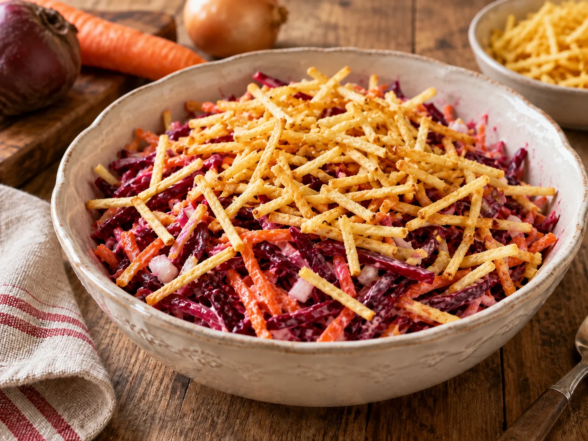

Was Kleines dazu · Salate
Rote Bete Salat
Von Angelina F.

Ein unkomplizierter, cremiger Salat aus Roter Bete und frischen Möhren. Die feinen Kartoffelsticks kommen erst kurz vor dem Servieren darüber und sorgen für einen würzigen Crunch.
Zutaten
500 gGekochte Rote Bete, in dünnen Streifen
3Möhren, frisch geraspelt
1 kleineZwiebel, fein gewürfelt
4 ELMayonnaise
2 ELSchmand
Nach GeschmackSalz und Pfeffer
1 große HandvollKartoffelsticks
Zubereitung
- Die gekochte Rote Bete gut abtropfen lassen und in dünne Streifen schneiden.
- Die Möhren schälen und grob raspeln. Die Zwiebel schälen und fein würfeln.
- Rote Bete, Möhren und Zwiebel mit Mayonnaise und Schmand gründlich vermischen. Mit Salz und Pfeffer abschmecken und nach Wunsch kurz durchziehen lassen.
- Die Kartoffelsticks erst unmittelbar vor dem Servieren großzügig über dem Salat verteilen.
Tipp
Wenn du den Salat vorbereitest, bewahre die Kartoffelsticks separat auf. So bleiben sie bis zum Servieren schön knusprig.